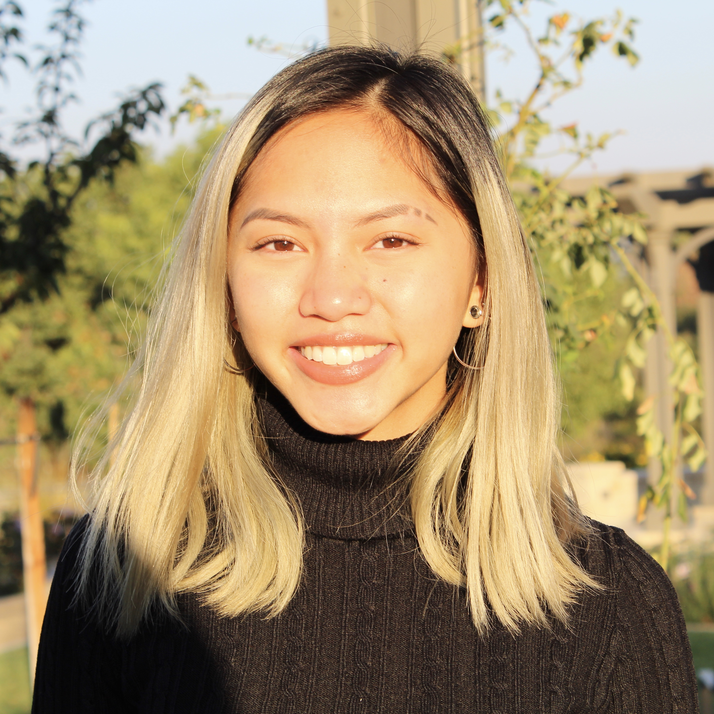

My name is Avey Maria Teresa Laudiano Songco and I plan to earn my B.S. in Industrial Engineering and Operations Research from UC Berkeley in May 2022. I am also minoring in Global Poverty and Practice and am in the process of earning my certificates in Entrepreneurship and Technology and Design Innovation. I am a proud low-income, first-generation, aspiring Filipina engineer!
this short personal website was created for my Web Design and Development class (': will make a more thorough and PIMPED out one soon!
My Platform
Southeast Carson, California: a working-class immigrant neighborhood where gang violence plagues adolescents, graffiti masks alley walls, and gunshots awaken families in the middle of the night. The elementary and middle schools I attended posed many challenges for me similar to those I faced in my community. Through my childhood experiences, I am now more cognizant of the extreme circumstances that underserved children are exposed to.
At thirteen, I was diagnosed with moderate scoliosis and had to wear a Boston back brace for three years to keep my condition from worsening. During class, I would constantly need to adjust my position just to keep my focus from wandering towards the irritation from my orthotic. Having to live with scoliosis for the rest of my life was a miserable thought at first, but I learned to be resilient.
During visits to my orthopedic doctor, I was exposed to different forms of prosthetics made for people with missing limbs. My doctor would show me images of children around my age who did not have arms or legs. I listened in awe as he explained to me that these prostheses, which attach in place of the missing body part, were designed and made by engineers in order to enhance the lives of patients. Learning that engineers design apparatuses meant to enrich the lives of others and better society was truly inspiring. This experience had a powerful impact on my decision to pursue engineering. Because of my devotion to help others, I aspire to be an engineer who not only gives back to her community but also provides service to areas such as developing countries, which are in great need of improvement.
My career goal is to do nonprofit work such as implementing sustainable engineering solutions in rural areas. I am currently thinking of using supply-chain management to assist third-world countries so that resources can be made available at the most efficient and cost-effective way possible.